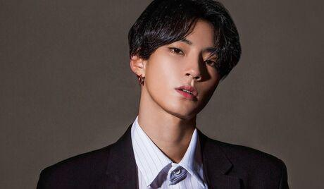
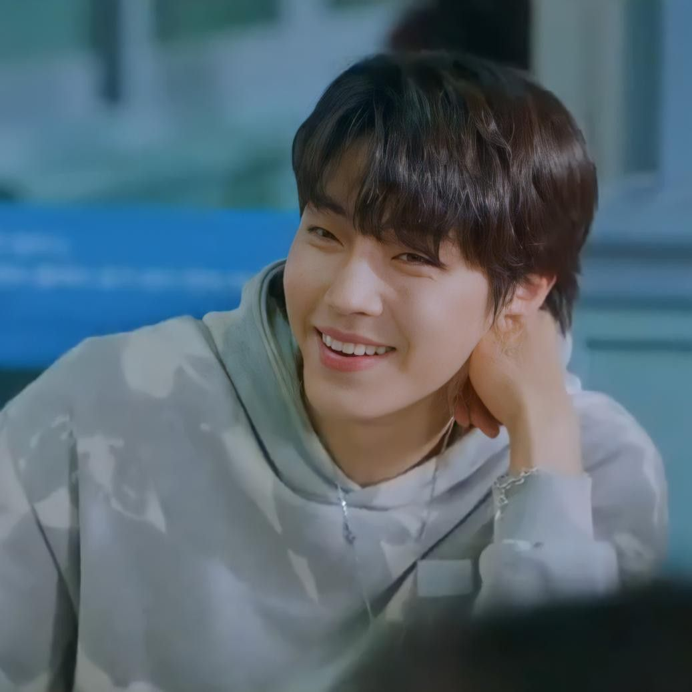

A pessoa mais estilosa e talentosa de todos os tempos
Hwang In-yeop; nascido em 19 de janeiro de 1991 é um ator, modelo e cantor sul-coreano. Ele é conhecido por seus papéis em dramas como WHY, Freshman, The Tale of Nokdu, 18 Again e True Beauty.
